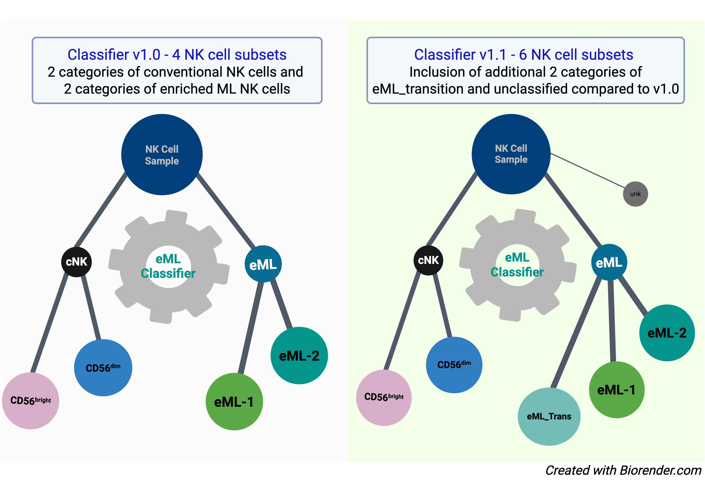
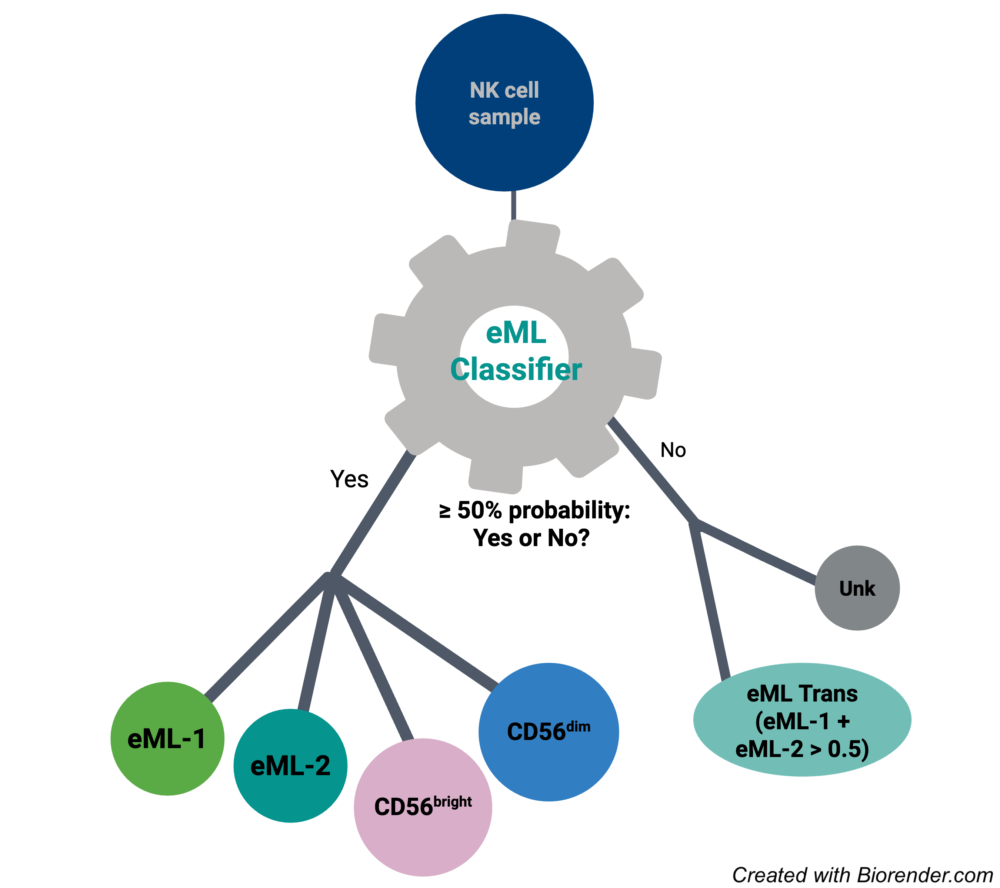
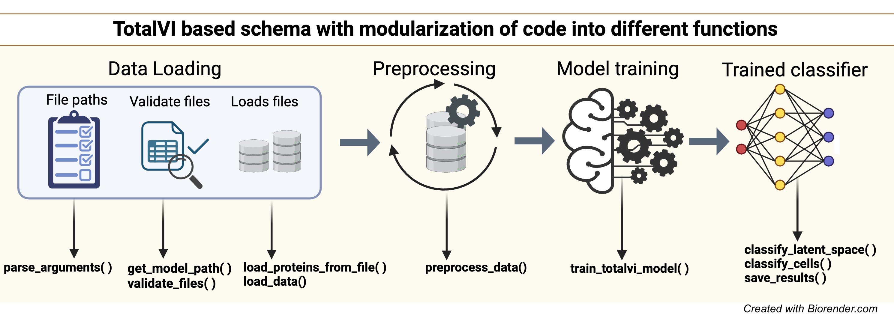

Outline¶
Natural Killer (NK) cells, when activated by the cytokines IL-12, IL-15, and IL-18, do not uniformly transition into cytokine induced memory-like (ML) states, as previously assumed. A recent study (Foltz*, Tran* et al., 2024 (https://doi.org/10.1126/sciimmunol.adk4893)) demonstrated that such stimulation leads to heterogeneous NK cell fates, which include effector cytokine-primed NK (effcNK) cells and a distinct enriched memory-like (eML) NK population marked by enhanced IFN-γ production.
Building on these findings, we developed a machine learning classifier (Classifier Version 1.0) using CITE-seq data to enable unbiased and accurate identification of conventional NK cells and enriched ML NK cells. Classifier Version 1.1, presented here, extends this original model (classifier Version 1.0) by introducing two additional categories: eML_transition and unclassified. These additions allow for refined classification of NK cells that do not meet the strict assignment thresholds used in the original classifier.
{kind=link}

This is performed by classify cells( ) function, which classifies each cell as:
Assigns the label with the highest probability for the cell if any probability exceeds 0.5.
eML_transition: If both eML1 and eML2 combined have a probability > 0.5 but none of the individual types exceed 0.5,unclassified: If all probabilities are below 0.5
{kind=link}

Explanation of the Classifier¶
Classifier includes a pipeline for processing single-cell multi-omics data (RNA +/ protein) using the scvi-tools framework, particularly the TOTALVI model, to classify NK cells. The purpose of this classifier is to
Loads a dataset of RNA counts, metadata and (optionally) protein expression.Aligns it with a reference dataset trained with TOTALVI.
Classifies cells into NK cell subtypes using a pretrained classifier, BBC (Balanced Bagging Classifier).
Saves results including probabilities and updated data objects.
The following root structure includes various components of the classifier and how each part contributes to its functionality. This includes data preprocessing, model training, and classification steps.
Root Structure¶
Import Libraries
System & OS:
argparse,os,sys,warningsData Handling:
numpy,pandas,anndata,scanpyDeep Learning:
torch,scvi,TOTALVINetworking:
requests
Argument Parsing
parse_arguments()– Handles command-line arguments
Functions
Download & File Handling
get_model_path()– Retrieves correct reference files pathsvalidate_files()– Ensures required input files existvalidate_data_integrity- Validates if the number of lines and barcodes match between RNAcounts and ADT dataload_proteins_from_file()– Loads protein names from a file
Data Loading & Processing
load_data()– Loads AnnData object and external datapreprocess_data()– Prepares data for TOTALVI processingintegrate_protein_data()– Aligns protein expression datainitialize_protein_data()– Sets up a zero-filled protein matrixprepare_adata_for_totalvi()– Final preprocessing for TOTALVIalign_protein_data()– Ensures query protein expression matches reference
Model Training & Classification
train_totalvi_model()– Loads & trains TOTALVI modelclassify_latent_space()– Uses BBC classifier for predictionssave_results()– Saves classification results and trained modelclassify_cells()– Assigns NK cell types based on probabilities
Main Execution
Parses user arguments
Loads and preprocesses data
Trains TOTALVI model
Classifies latent space and saves results
{kind=link}
